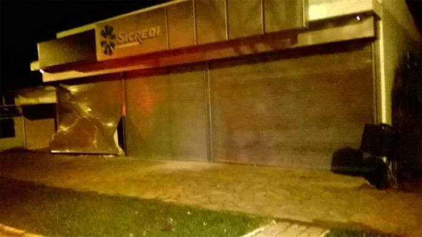

Senado aprova impeachment, Dilma perde mandato e Temer assume
Presidente afastada perdeu mandato por 61 votos favoráveis e 20 contrários.
O plenário do Senado aprovou nesta quarta-feira (31), por 61 votos favoráveis e 20 contrários, o impeachment de Dilma Rousseff. A presidente afastada foi condenada sob a acusação de ter cometido crimes de responsabilidade fiscal – as chamadas "pedaladas fiscais" no Plano Safra e os decretos que... Leia mais clicando aqui.
Policia
Ônibus de excursão é assaltado na BR , em Frederico Westphalen
Um ônibus de Santo Ângelo que tinha como destino Foz do Iguaçu, no Paraná, foi assaltado na noite dessa sexta-feira, próximo a Frederico Westphalen, no Noroeste gaúcho... Leia mais clicando aqui.
Policia
Bandidos atacam 4 agências bancárias no RS durante a madrugada
Quatro ataques a agências bancárias foram registrados no Rio Grande do Sul durante a madrugada desta sexta-feira, 2 de setembro... Leia mais clicando aqui.
Esportes
Brasil joga bem e goleia Equador por 3 a 0 na estreia de Tite
Com o pé direito. Assim o técnico Tite iniciou a trajetória na Seleção Brasileira. Em sua primeira partida no comando da equipe, a Canarinho venceu o Equador, no Estádio Olímpico Atahualpa, em Quito, por 3 a 0... Leia mais clicando aqui.
Geral
RS registra duas mortes violentas a cada 3 horas
Desde a noite de sexta-feira, por volta das 21h30, até às 12h deste domingo (4), o Rio Grande do Sul registrou uma média de duas mortes violentas a cada três horas. No período, foram 26 homicídios e três óbitos no trânsito... Leia mais clicando aqui.
Aposta do Distrito Federal fatura R$ 9,5 mi na Mega-Sena
Uma aposta do Distrito Federal acertou as seis dezenas do concurso 1.853 da Mega-Sena, realizado na noite deste sábado, em Uberlândia, Minas Gerais. A aposta faturou o prêmio de R$ 9.543.014,95... Leia mais clicando aqui.
RS registra duas mortes violentas a cada 3 horas
O Ministério Público de Contas do Estado emitiu um parecer desfavorável à aprovação das contas do governador José Ivo Sartori. O exercício em questão é 2015.
Segundo o corregedor-geral, Estilac Martins Xavier, uma série de inconsistências foi encontrada, como a falta de um plano de ação voltado... Leia mais clicando aqui.